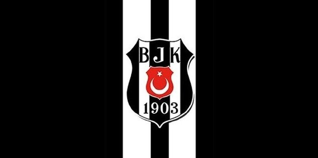
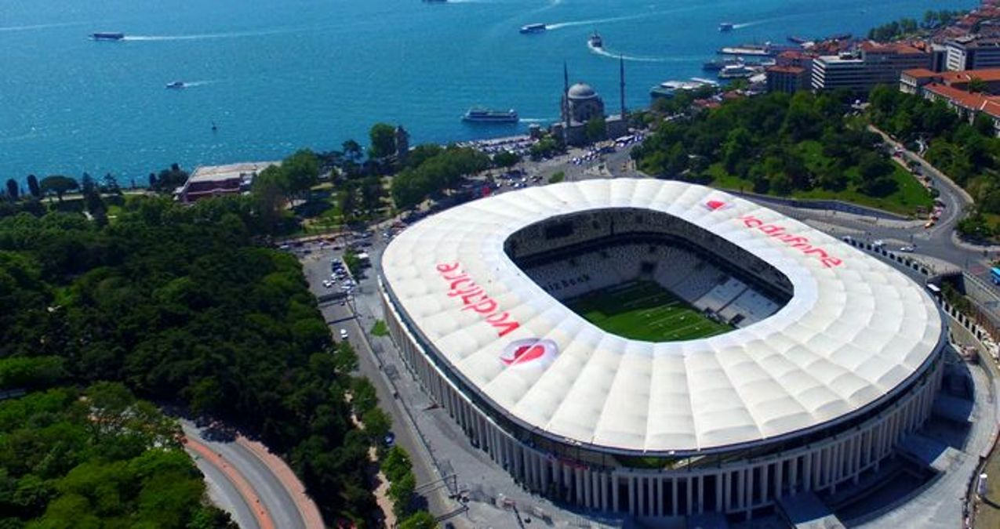
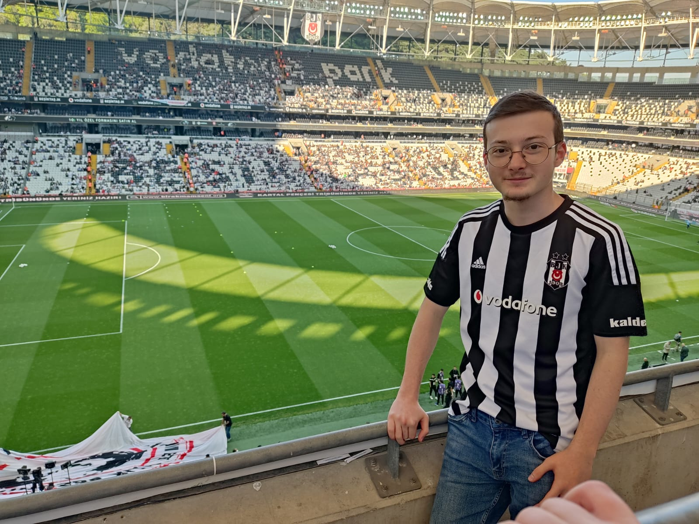

BEŞİKTAŞ
Türkiye Cumhuriyet tarihinde kurulmuş ilk spor kulübüdür. Türkiye'nin sporda adeta çınarı gibidir.1903 yılında kurulmuş olup bu sene 120 yaşında olmuştur. İlk başta jimnastik kulübü olarak kurulsa da şu anda birçok spor dalında takımı mevcuttur. Tarihinde birçok başarılara imza atmış ve atmaya da devam etmektedir. Türkiye Futbol Süper Lig'inde ve kupasında birçok şampiyonluğu vardır. Hentbolda da oldukça başarılıdır.
Beşiktaş taraftar grubu Çarşı adını Dünya geneline duyurmuştur hatta 2016-2018 yılları arasında "Come To Besiktas" sloganı Dünya'nın bildiği ve tanıdığı birçok futbolcular, takımlar ve teknik direktörler tarafından kullanılmıştır. Ayrıca taraftar grubu 2007-2008 yılında UEFA Şampiyonlar Ligi'nde Liverpool ile oynanan maçta 132dB ile ses rekoru kırmış ve UEFA tarafından tescillenmiştir. 2017 yılında bu taraftar grubu yine Beşiktaş-Leipzig maçında Leipzig santraforu Timo Werner'i gürültülü sesle rahatsız etmiş ve daha ilk yarı bitmeden oyundan alınmıştı.. Bu gürültülü, baskın taraftar grubu hala aynı şekilde devam etmektedir. Geçen haftalarda oynanan Beşiktaş-Galatasaray derbisine gelen yabancı bir taraftar YouTube üzerinden yayınladığı bir videoda bu sesli ortama dikkat çekmiş ve yanına kulak tıkacı getirmiştir.

2016 yılında hizmete açılmış olan şu anki adıyla Vodafone Park Beşiktaş'ın maçlarını
oynadığı stadyumudur.
İlk maç Bursaspor'a karşı oynanmıştır ve Beşiktaş 3-2 galip gelmiştir. Stadyumun ilk
golünü o zamanki
Beşiktaş forveti Mario Gomez atmıştır. Bu maçta stadyum tam kapasite (41.903)
dolmuştur. Birçok büyük maça
ev sahipliği yapmıştır (bkz).
Çeşitli konserler de bu stadyumda yapılmıştır.

Geçen sene son lig maçında Vodafone
Park'ta çekildiğim fotoğraf. Birçok maça gittim fakat şimdilik fotoğraflar arasında
kayda değer bunu bulabildim. Şu ana gittiğim en üst düzeydeki maç UEFA şampiyonlar ligindeki
son 16 turunda Alman ekibi Bayern Münih maçıydı. O maçta da muhteşem bir tribün atmosferi vardı.